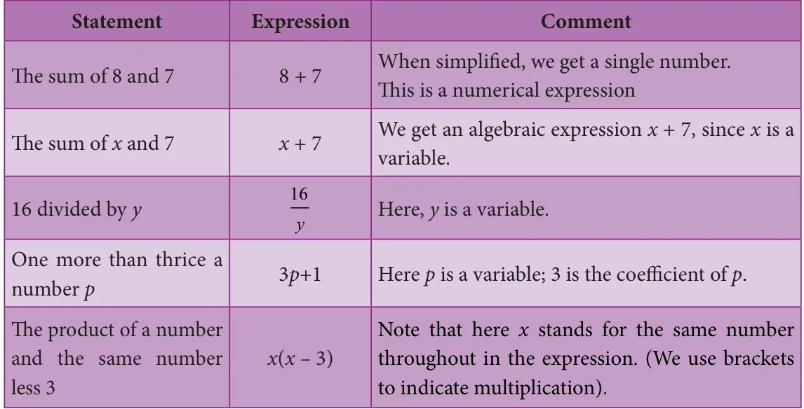
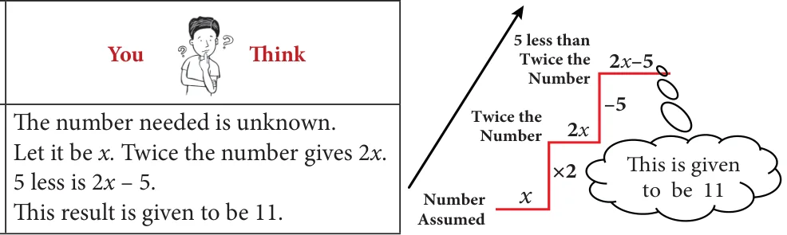

<!DOCTYPE html>
<html lang="en">
<head>
<meta charset="UTF-8">
<meta name="viewport" content="width=device-width,initial-scale=1">
<title>3.8 Linear Equation in One Variable — Algebra</title>
<meta name="description" content="Class 8 Mathematics · Algebra · 3.8 Linear Equation in One Variable">
<link rel="icon" href="data:image/svg+xml,<svg xmlns='http://www.w3.org/2000/svg' viewBox='0 0 100 100'><text y='.9em' font-size='90'>📘</text></svg>">
<link rel="stylesheet" href="../../../assets/book.css">
<link rel="stylesheet" href="https://cdn.jsdelivr.net/npm/katex@0.16.11/dist/katex.min.css" crossorigin="anonymous">
</head>
<body>
<header class="topbar">
<div class="topbar-in">
  <div class="crumb">
    <span class="c1"><a href="../../../index.html">Library</a> · <a href="../../index.html">Class 8 Mathematics</a></span>
    <span class="c2">Algebra · 3.8 Linear Equation in One Variable</span>
  </div>
  <a class="tb-btn" data-nav="prev" href="../../03-algebra/13-exercise-3.5/index.html" title="Exercise 3.5">←</a>
  <details class="drawer"><summary class="tb-btn" title="Sections in this chapter">☰</summary>
<div class="drawer-panel"><div class="dh">Algebra</div><a href="../01-chapter-opener/index.html">Chapter opener</a><a href="../02-introduction-3.1/index.html">3.1 Introduction</a><a href="../03-multiplication-of-algebraic-expressions-3.2/index.html">3.2 Multiplication of Algebraic Expressions</a><a href="../04-exercise-3.1/index.html">Exercise 3.1</a><a href="../05-division-of-algebraic-expressions-3.3/index.html">3.3 Division of Algebraic Expressions</a><a href="../06-avoid-some-common-errors-3.4/index.html">3.4 Avoid Some Common Errors</a><a href="../07-exercise-3.2/index.html">Exercise 3.2</a><a href="../08-identities-3.5/index.html">3.5 Identities</a><a href="../09-cubic-identities-3.6/index.html">3.6 Cubic Identities</a><a href="../10-exercise-3.3/index.html">Exercise 3.3</a><a href="../11-factorisation-3.7/index.html">3.7 Factorisation</a><a href="../12-exercise-3.4/index.html">Exercise 3.4</a><a href="../13-exercise-3.5/index.html">Exercise 3.5</a><a href="../14-linear-equation-in-one-variable-3.8/index.html" aria-current="page">3.8 Linear Equation in One Variable</a><a href="../15-exercise-3.6/index.html">Exercise 3.6</a><a href="../16-word-problems-that-involve-linear-equations-3.8.5/index.html">3.8.5 Word problems that involve linear equations</a><a href="../17-exercise-3.7/index.html">Exercise 3.7</a><a href="../18-graph-3.9/index.html">3.9 Graph</a><a href="../19-exercise-3.8/index.html">Exercise 3.8</a><a href="../20-to-obtain-a-straight-line-3.9.7/index.html">3.9.7 To obtain a straight line</a><a href="../21-linear-graph-3.10/index.html">3.10 Linear Graph</a><a href="../22-exercise-3.9/index.html">Exercise 3.9</a><a href="../23-exercise-3.10/index.html">Exercise 3.10</a><a href="../24-summary/index.html">SUMMARY</a></div></details>
  <a class="tb-btn" data-nav="next" href="../../03-algebra/15-exercise-3.6/index.html" title="Exercise 3.6">→</a>
  <button class="tb-btn" data-theme-toggle title="Toggle light / dark" aria-label="Toggle light or dark theme">◐</button>
</div>
<div class="progress"><span style="width:37.0%"></span></div>
</header>
<main class="wrap">
<div class="sec-head">
  <p class="eyebrow"><a href="../index.html">Chapter 3 · Algebra</a></p>
  <h1>3.8 Linear Equation in One Variable</h1>
  <p class="sec-meta">Textbook pages 24–29 · 7 figures</p>
</div>
<article class="prose">
<h3 id="s-3-8-1-introduction">3.8.1 Introduction</h3>
<p>We shall recall some earlier ideas in algebra. What is the formula to find the perimeter of a rectangle? If we denote the length by l and breadth by b, the perimeter P is given as \(P = 2(l +\) b). In this formula, 2 is a fixed number whereas the literal numbers P, l and b are not fixed because they depend upon the size of the rectangle and hence P, l and b are variables. For rectangles of different sizes, their values go on changing. 2 is a constant (which does not change whatever may be the size of the rectangle).</p>
<p>An algebraic expression is a mathematical phrase having one or more algebraic terms including variables, constants and operating symbols (such as plus and minus signs).</p>
<p>Example: \(4x + 5x + 7xy + 100\) is an algebraic expression; note that the first term</p>
<p>4x consists of constant 4 and variable x . What is the constant in the term 7xy? Is there a variable in the last term of the expression?</p>
<p>The ‘number parts’ of the terms with variables are coefficients. In \(4x + 5x + 7xy + 100\), the coefficient of the first term is 4. What is the coefficient of the second term? It is 5. The coefficient of the xy term is 7.</p>
<h3 id="s-3-8-2-forming-algebraic-expressions">3.8.2 Forming algebraic expressions</h3>
<p>We now to translate a few statements into an algebraic language and recall how to frame expressions. Here are some examples:</p>
<figure class="fig table-fig wide"></figure>
<h3 id="s-3-8-3-equations">3.8.3 Equations</h3>
<p>An equation is a statement that asserts the equality of two expressions; the expressions are written one on each side of an “equal to” sign. For example: \(2x + 7 = 17\) is an equation (where x is a variable). \(2x + 7\) forms the Left Hand Side (LHS) of the equation and 17 is its Right Hand Side (RHS).</p>
<p>Linear equations</p>
<p>An equation containing only one variable with its highest power as one is called a linear equation. Examples: \(3x - 7 = 10\).</p>
<p>Linear equations in one or more variables:</p>
<p>An equation is formed when a statement is put in the form of mathematical terms. Here are some examples:</p>
<ul class="qlist">
<li><span class="mk">(i)</span><span class="lt">A number is added to 5 to get 25</span></li>
</ul>
<p>This statement can be written as \(x + 5 = 25\). This equation \(x + 5 = 25\) is formed by one variable (x) whose highest power is 1. So it is called a linear equation in one variable. Therefore, an equation containing only one variable with its highest power as one is called a linear equation in one variable.</p>
<div class="mathblock"><p>Examples: \(5x - 2 = 8\), \(3y + 24 = 0\)</p></div>
<p>This linear equation in one variable is also known as simple equation.</p>
<ul class="qlist">
<li><span class="mk">(ii)</span><span class="lt">Sum of two numbers is 45</span></li>
</ul>
<p>This statement can be written as \(x + y = 45\).</p>
<p>This equation \(x + y = 45\) is formed by two variables x and y whose highest power is 1. Hence, we call it as a linear equation in two variables. Now, in this class we shall learn to solve linear equations in one variable only. You will learn to solve other type of equations in higher classes.</p>
<h4 class="callout-h" id="s-note">Note</h4>
<p>The equations so formed with power more than 1 of its variables, (2,3....etc.)</p>
<p>are called as quadratic, cubic equations and so on.</p>
<p>Examples: (i) \(x + 4x + 7 = 0\) is a quadratic equation.</p>
<ul class="qlist">
<li><span class="mk">(ii)</span><span class="lt">\(5x - x + 3x =10\) is a cubic equation.</span></li>
</ul>
<h4 class="callout-h" id="s-try-these">Try these</h4>
<p>Identify which among the following are linear equations.</p>
<ul class="qlist">
<li><span class="mk">(i)</span><span class="lt">\(2 + x = 19\) (ii) \(7x - 5 = 3\) (iii) \(4p = 12\) (iv) 6m+2 (v) n=10</span></li>
</ul>
<div class="mathblock"><p>\(\frac{6x}{8}\)</p></div>
<ul class="qlist">
<li><span class="mk">(vi)</span><span class="lt">\(7k - 12= 0\) (vii) \(+ y = 1\) (viii) \(5 + y = 3x\) (ix) 10p+2q=3 (x) \(x^{2} - 2x - 4\)</span></li>
</ul>
<p>Convert the following statements into linear equations: Example 3.28</p>
<p>7 is added to a given number to give 19.</p>
<h4 class="callout-h" id="s-solution">Solution:</h4>
<p>Let the number be n. When 7 is added to this number we get \(n + 7\). This result is to give 19. Therefore, the equation is \(n + 7 = 19\).</p>
<figure class="fig side-fig"></figure>
<h4 class="callout-h" id="s-example-3-29">Example 3.29</h4>
<p>The sum of 4 times a number and 18 is 28.</p>
<h4 class="callout-h" id="s-solution">Solution:</h4>
<p>Let the number be x. 4 times the number is 4x. Adding 18 now, we get \(18 + 4x\). Now the result should be 28. Thus, the equation has to be \(18 + 4x = 28\).</p>
<h4 class="callout-h" id="s-try-these">Try these</h4>
<p>Convert the following statements into linear equations:</p>
<ul class="qlist">
<li><span class="mk">1.</span><span class="lt">On subtracting 8 from the product of 5 and a number, I get 32.</span></li>
<li><span class="mk">2.</span><span class="lt">The sum of three consecutive integers is 78.</span></li>
<li><span class="mk">3.</span><span class="lt">Peter had a Two hundred rupee note. After buying 7 copies of a book he was left with `60.</span></li>
<li><span class="mk">4.</span><span class="lt">The base angles of an isosceles triangle are equal and the vertex angle measures \(80 ^{\circ}\) .</span></li>
<li><span class="mk">5.</span><span class="lt">In a triangle ABC, \(\angle A\) is \(10^{o}\) more than \(\angle B\). Also \(\angle C\) is three times \(\angle A\). Express the</span></li>
</ul>
<p>equation in terms of angle B.</p>
<h3 id="s-3-8-4-solution-of-a-linear-equation">3.8.4 Solution of a linear equation</h3>
<p>The value which replaces a variable in an equation so as to make the two sides of the equation equal is called a solution or root of the equation.</p>
<div class="mathblock"><p>Example : \(2x =10\)</p></div>
<p>We find that the equation is “satisfied” with the value \(x = 5\). That is, if we put \(x = 5\), in the equation, the value of the LHS will be equal to the RHS. Thus \(x = 5\) is a solution of the equation. Note that no other value for x satisfies the equation. Thus one can say \(x = 5\) is “the” solution of the equation.</p>
<ul class="qlist">
<li><span class="mk">(i)</span><span class="lt">The DO-UNDO Method:</span></li>
</ul>
<figure class="fig table-fig wide"></figure>
<p>Statement (given)</p>
<p>5 less than twice a number is 11.</p>
<p>This formation of equation can be visualized as follows:</p>
<p>From the number x, we reached \(2x - 5\) by performing operations like subtraction, multiplication etc. So when \(2x - 5 = 11\) is given, to get back to the value of x, we have to 'undo' all that we did! Thus, we ‘do’ to form the equation and ‘undo’ to get</p>
<figure class="fig"></figure>
<p>the solution. unknown obtained</p>
<h4 class="callout-h" id="s-example-3-30">Example 3.30</h4>
<ul class="qlist">
<li><span class="mk">(a)</span><span class="lt">Solve the equation: \(x - 7 = 6\) (b) Solve the equation: \(3x = 51\)</span></li>
</ul>
<p class="lead">Solution: Solution:</p>
<p>\(x - 7 = 6\) (Given) \(3x = 51\) (Given) \(x - 7 +7 = 6+7\) (add 7 on both sides) \(3 \times x = 51\)</p>
<div class="mathblock"><p>\(x = 13\)</p><p>\(\frac{3 \times x51}{33} x =17\)</p></div>
<aside class="sidenote"><p>= ( \(\div 3\) on both sides)</p></aside>
<ul class="qlist">
<li><span class="mk">(ii)</span><span class="lt">Transposition method</span></li>
</ul>
<p>The shifting of a number from one side of an equation to other is called transposition. For the above example, (a) doing addition of 7 on both sides is the same as changing the number \(- 7\) on the left hand side to its additive inverse +7 and add it on the right hand side.</p>
<div class="mathblock"><p>\(x - 7 = 6 x = 6+7 x = 13\)</p></div>
<figure class="fig"></figure>
<p>likewise, (b) doing division by 3 on both sides is the same as changing the number 3 on the LHS to its reciprocal \(\frac{1}{3}\) and multiply it on the RHS and vice-versa. For Example \((i)6x =12\) (ii) \(\frac{y}{7} =10\)</p>
<div class="mathblock"><p>\(x = \frac{12}{6} y =10 \times 7 x = 2 y = 70\) Note</p></div>
<p>Example 3.31 While rearranging the given linear equation, Solve \(2x + 5 = 9\) group the like terms on one side of the equality sign, and Solution: then do the basic arithmetic operations according to the signs that occur in the expression.</p>
<div class="mathblock"><p>\(2x + 5 = 9\)</p><p>\(2x = 9 - 5\)</p></div>
<p>\(2x = 4\) Try these</p>
<p>\(x = \frac{4}{2} = 2 1\). Solve for ‘x’ and ‘y’</p>
<ul class="qlist">
<li><span class="mk">(i)</span><span class="lt">\(2x = 10\) (ii) \(3 + x = 5\)</span></li>
</ul>
<p>Example 3.32 (iii) \(x - 6 = 10\) (iv) \(3x + 5 = 2\)</p>
<p>Solve \(\frac{4y}{3} - ^{7} = \frac{2y}{5}\) (v) \(= 3\) (vi) \(- 2 = 4m - 6\)</p>
<div class="mathblock"><p>Solution: \(\frac{2x}{7}\)</p></div>
<p>(Rearranging the like terms) (vii) \(4(3x - 1) = 80\) (viii) \(3x - 8 = 7 - 2x\)</p>
<div class="mathblock"><p>\(\frac{4y2y}{35}\)</p><p>\(- = _{7}\) (ix) \(7 - y = 3(5 -\) y) (x) \(4(1 - 2y) - 2(3 -\) y) \(= 0\)</p><p>\(= 7\) Think \(\frac{20y - 6y}{15}\)</p></div>
<ul class="qlist">
<li><span class="mk">1.</span><span class="lt">“An equation is multiplied or divided by</span></li>
</ul>
<p>\(14y = 7 \times 15 a\) non zero number on either side.” Will there be any change in the solution?</p>
<p>\(\frac{7 \times 15}{14} 2\). “An equation is multiplied or divided by two</p>
<p>\(y =\)</p>
<p>different numbers on either side”. What will</p>
<p>\(\frac{15}{2}\) happen to the equation?</p>
<p>\(y =\)</p>
</article>
<nav class="pager"><a class="" data-nav="prev" href="../../03-algebra/13-exercise-3.5/index.html"><span class="dir">← Previous</span><span class="t">Exercise 3.5</span><span class="ch">Algebra</span></a><a class="nx" data-nav="next" href="../../03-algebra/15-exercise-3.6/index.html"><span class="dir">Next →</span><span class="t">Exercise 3.6</span><span class="ch">Algebra</span></a></nav>
</main><footer class="site">Generated from the source textbook PDFs · text, figures and exercises belong to their respective publishers.</footer><script defer src="https://cdn.jsdelivr.net/npm/katex@0.16.11/dist/katex.min.js" crossorigin="anonymous"></script>
<script defer src="https://cdn.jsdelivr.net/npm/katex@0.16.11/dist/contrib/auto-render.min.js" crossorigin="anonymous"
  onload="renderMathInElement(document.body,{delimiters:[
    {left:'\\(',right:'\\)',display:false},
    {left:'$$',right:'$$',display:true},
    {left:'\\[',right:'\\]',display:true}],throwOnError:false,ignoredTags:['script','noscript','style','textarea','pre','code']})"></script>
<script src="../../../assets/book.js"></script>
<script defer src="../../../../assets/search.js"></script>
</body>
</html>
